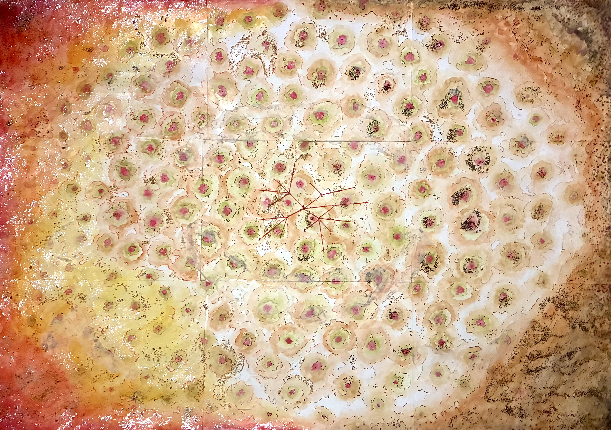
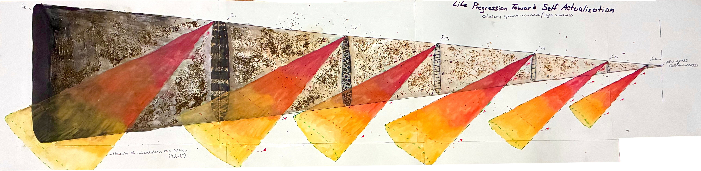
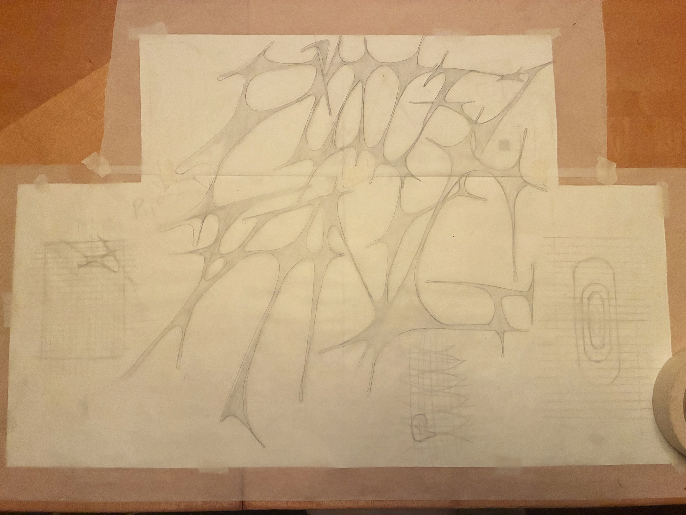

Oree's Borees © 2026 is licensed under CC BY-NC-SA 4.0


These diagrams were made for the Philosopher’s Diagram seminar at The New Center led by Thomas Mical. This was made after "Meditation Film" and before "Wheel: The Card Game". The class was posed with creating a diagram that is the students understanding of how the universe works aka a cosmogram. It was an interesting time in my life where I was couch surfing around nyc. At this time, it was early August and I was in Harlem at my lovely friend’s old apartment. Two weeks had passed since the project had been assigned and I hadn’t even begun lol (shocker - but I wasn’t working from ground zero) mainly due to space reasons. I knew I wanted to make these diagrams physically and I had the place to myself for the weekend, so I grinded over the 3 days from Friday (the due date) to a Sunday to get it done. I consider this a prototype and I am very satisfied with it. Below, I provided the write up I submitted with the diagram to explain the pieces as a “on the safe side”. Much of these diagrams are shaped by my personal experiences, impressions of space + architecture, and interest in gnostic/esoteric practices. Enjoy :).
[The diagrams that are correspond with the Meditation Film post also help to support these diagrams.]

The main cosmogram I developed is 2’ 4” x 1’ 7”. Produced on mixed media paper, the diagram was composed with watercolors, various colored pens, stamps, tea leaves, sewing thread, glitter finish and trace paper (barely visible). The main cosmogram diagram can be read from any direction (up down/ left right/ forward backward) and works at two scales. The cosmic scale and the much smaller interactable human scale. This diagram is a depiction of the crosszone between the line of being and the line of life which produces the world or reality as we know it. Being exists on one side of the page, marked by bright colors and glitter. The other, life, depicted by more earth tone browns and grays. The pink green spotting that occurs across the entire paper is this energetic field that works as a connective tissue amongst being, life and reality. One can image this field reacting in the same reflexive ways chromatophores in chameleon skin cells do. This energetic field is a conduit fluid for the threads/essences of life and being that “swim” through it. These threads are the red and black lines that wrap around the conduit spots. They easily navigate into and out of reality.
The bounds of reality are depicted in the middle of the page by a thin rectangular black line. Within this box are mini stick figures. In the center one is green and the others are black. The green person represents “you”, this encompassing, but not limited to, your personality, family, friends, coworkers, enemies etc. This is a minimum of ~200 people, all influential factors producing “you”. The black stick figures represent ~2000 people around you/your external environment across miles. The red thread sewn between “you” and “everyone else” is the naturally occurring energetic exchange (Ref: the d.sync diagram ). Around “the world” are arrow clouds signifying the movement of circulating thought which produces narratives that constitutes reality. Backward time thinking is nostalgia, memorial, remembrance, grief, historical framing etc. Forward time thinking is hope, Deja vu, clairvoyance, premonitions, intuition etc. These clouds can be understood as “conflict”: an external event (simply a happening not necessarily major) that comes from the collecting of smaller internal/unsee energetic percolations. (Ref: cloud diagram).

The second diagram (2’ 9” x 8.5”), “Life Progression Toward Self Actualization” serves as the “how” or “life advice as action” for the main cosmogram. This diagram is depicting the levels of unconsciousness/unawareness and the pursuit of achieving awareness. Dense consciousness often externalize as forms of addiction, bondage, etc. These are internally motivated stoppages though external conditions do play a factor (minor ex: a disorganized/unhygenic bedroom adding to one’s depression that they are already trying to navigate). Increasing the lightness of one’s conciousness, and therefore being, requires work. This work comes in the various forms of self enrichment: affirmations, fasting, meditating, engaging with your inner child, therapy, journaling, praying, eating nutritious foods, hygienic practice, respecting, giving you energy to those who deserve it and choosing yourself selflessly etc.
In this diagram only 6 rings (with an implied “…”) of unconscious must be surpassed in order to achieve awareness, but really there is no fixed range. The drill of being can be applied anywhere and extend as far as required (a phase of life, the event of death and rebirth, etc.) just as the rings of life can go on past 6. The colors used in this diagram are synonymous with that of the main cosmogram. The heaviness and realness of life can and is navigated through by equipping and drilling being essence. This diagram is not a depiction of one life time, though someone can achieve almost awareness in a lifetime. Rather this achievement of awareness takes lifetimes. One soul can live many lives navigating this journey to awareness. Complete awareness cannot “exist” in reality for it is nothingness (a complete fusion with what is bigger, “god”, “source” etc. and the complete removal of all ego.)
Oree's Borees © 2026 is licensed under CC BY-NC-SA 4.0



[EXTRA!: A recent (as of Oct '26) hand draft of the words "P'ooty Tang". I had been wanting to do some drafting, but didn't know what. Then one day I woke up with these words in my mind, so I just did this freehand, played around with it for a bit and now I am giving to my bestie lol. I told my friends that I was drafting the word "P'ooty Tang" to which they informed me that P'ootie Tang" is a movie. They said this movie made disturbed them. It looks like an "Undercover Brother"/ blaxplotaiton parody type of movie (which I liked Undercover Brother), but there's some names credited to "P'ootie Tang" that I find suspicious. I want to get high and watch it with someone or a group of people tho lol. I don't really watch tv shows, but I love movies!]